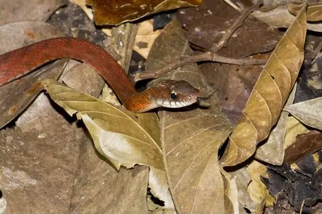
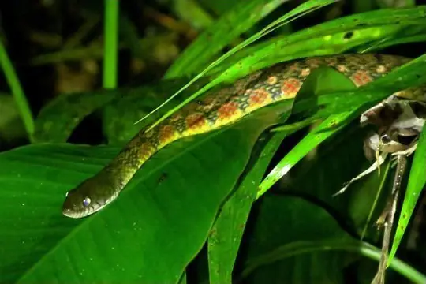

Snakes of Brunei
14 snake species are recorded in Brunei in SnakeList: 5 venomous and 9 non-venomous, from 5 families.
- 14species
- 5venomous
- 9non-venomous
- 5families
These totals count the snakes SnakeList records as living in Brunei. A species counts if it is recorded anywhere in the country, so not every snake lives in every region.
Species
Showing 14 species
 Banded KraitBungarus fasciatus
Banded KraitBungarus fasciatus Blunthead Slug SnakeAplopeltura boa
Blunthead Slug SnakeAplopeltura boa Borneo Pit ViperCraspedocephalus borneensis
Borneo Pit ViperCraspedocephalus borneensis Eight-striped Kukri SnakeOligodon octolineatus
Eight-striped Kukri SnakeOligodon octolineatus Gold-ringed Cat Snake (dendrophila)Boiga dendrophila
Gold-ringed Cat Snake (dendrophila)Boiga dendrophila North Philippine Temple PitviperTropidolaemus subannulatus
North Philippine Temple PitviperTropidolaemus subannulatus Paradise Tree SnakeChrysopelea paradisi
Paradise Tree SnakeChrysopelea paradisi Ringed Kukri SnakeOligodon annulifer
Ringed Kukri SnakeOligodon annulifer
Specklebelly KeelbackRhabdophis chrysargos Spotted KeelbackXenochrophis maculatus
Spotted KeelbackXenochrophis maculatus Three-Banded Bridled SnakeLycodon tristrigatus
Three-Banded Bridled SnakeLycodon tristrigatus
Triangle KeelbackXenochrophis trianguligerus White-collared Reed SnakePseudorabdion albonuchalis
White-collared Reed SnakePseudorabdion albonuchalis- No photo yetAcrochordus dubius
No snakes in Brunei match.
Brunei’s snakes in numbers
- Families: Colubridae 9, Viperidae 2, Acrochordidae 1, Elapidae 1, Pareidae 1.
- 1 is recorded in no other country in SnakeList: Specklebelly Keelback.